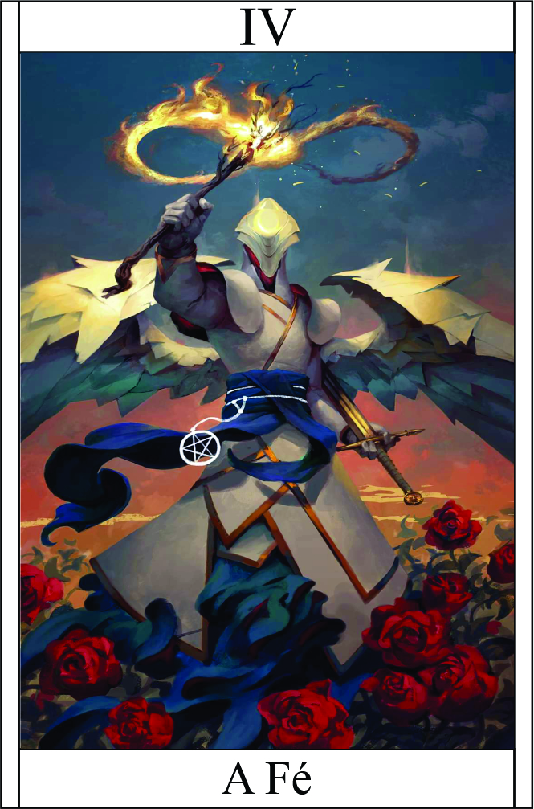

A Fé
Têndencia: Bom

Passiva:
Com uma fé inabalável, você possui a capacidade de recuperar vida e se libertar de efeitos negativos. Sua fé é tão forte que você é capaz de superar desafios difíceis.Quando você realiza uma ação de recuperação de vida (de 2d4) ou tenta se livrar de um efeito negativo, a dificuldade é aumentada. Você precisa rolar um dado e obter um resultado maior que 4 para ter sucesso. Essa dificuldade adicional reflete a resistência do dano ou a força do efeito negativo que você está enfrentando.
Essa habilidade é um reflexo da sua devoção e crença inabalável, permitindo-lhe encontrar força interior e superar adversidades. No entanto, vale ressaltar que o resultado final depende da sua sorte nos dados. Mesmo com uma fé forte, nem sempre é possível superar todos os desafios.
Legado 1 - Espada de Gabriel:
Você invoca a Espada de Chama chamada Espada de Gabriel, uma arma lendária capaz de causar danos poderosos. Essa espada está envolta em chamas ardentes, tornando-a uma arma temível.
Quando você desfere um golpe com a Espada de Gabriel, ela causa um dano significativo aos seus oponentes.
Além disso, em um acerto crítico, a espada provoca uma explosão de chamas, afetando não apenas o alvo direto, mas também aqueles que estiverem próximos.
A explosão de chamas infligirá dano adicional aos inimigos próximos ao alvo principal do ataque. O poder das chamas consome seus adversários, tornando-os vulneráveis ao fogo ardente da Espada de Gabriel.
Dano Normal: (V) + 7 | | Dano Critico das Chamas: (V) + 3 alvos secundário
Condição para ativar a habilidade: É necessário pronunciar o comando "Espada de Gabriel" antes de desferir um golpe com a arma.
Restrição de uso: A habilidade duração a cada 5 rodadas de combate.
Condição para a explosão de chamas: A explosão de chamas só ocorre em um acerto crítico. É necessário rolar um resultado natural 6 no dado para que a explosão seja desencadeada.
Legado 2 - Purificação Divina:
Com essa habilidade, você é capaz de realizar uma purificação divina ao seu redor, dissipando efeitos negativos que estejam afetando você ou seus aliados.
Ao ativar a Purificação Divina, uma aura sagrada se forma ao seu redor, irradiando energia positiva. Essa aura é capaz de dissipar maldições, venenos e outros efeitos negativos (capaz curar doenças) que estejam prejudicando você ou seu grupo.
Aqueles que obtiverem um resultado maior que a dificuldade conseguem se libertar dos efeitos negativos, sentindo um alívio imediato e renovando suas energias.
Essa habilidade traz consigo uma aura de mistério e poder divino, tornando a invocação da espada um evento significativo durante o combate. Ao obtê-la, você se torna capaz de desferir golpes poderosos e desencadear uma habilidade adicional, que pode variar de acordo com as circunstâncias e o contexto do jogo.
Bônus +1 | teste VIGOR
Condição para ativar a habilidade: É necessário canalizar energia divina por um período de concentração de 1 turno antes de ativar a Purificação Divina.
Restrição de uso: A habilidade pode ser utilizada uma vez por encontro ou combate. Após o uso, é necessário um descanso adequado para recuperar a energia necessária para ativá-la novamente.
Dificuldade do teste de resistência: A dificuldade do teste de resistência para se livrar dos efeitos negativos é determinada pelo mestre do jogo, considerando a intensidade e a natureza do efeito em questão.
Legado 3 - Escudo da Fé:
Com o Escudo da Fé, você é capaz de invocar uma barreira de proteção ao seu redor, fortalecendo sua defesa contra ataques inimigos.
Ao ativar o Escudo da Fé, uma energia protetora envolve você, formando um escudo impenetrável que bloqueia uma parte do dano recebido
Essa habilidade reduz o dano recebido de ataques físicos e mágicos, diminuindo sua efetividade. O escudo se mantém ativo durante um período determinado, proporcionando uma proteção adicional enquanto estiver em combate.
É importante lembrar que o Escudo da Fé não é invulnerável e possui um limite de resistência. O escudo pode ser rompido caso receba ataques contínuos e de alta intensidade.
Essas habilidades refletem a força e o poder da sua fé, permitindo-lhe enfrentar desafios com mais facilidade, causar danos poderosos e proteger a si mesmo e seus aliados contra ameaças.
VIDA DO ESCUDO: SEU VIGOR / 1.5 = VIDA
Condição para ativar a habilidade:É necessário declarar e concentrar-se em fortalecer sua fé para invocar o Escudo da Fé.
Restrição de uso: Escudo da Fé pode ser invocado uma vez a cada rodada de combate. Após o uso, é necessário esperar a próxima rodada para ativá-lo novamente.
Dificuldade do teste de resistência: O escudo possui um limite de resistência que é equivalente a uma determinada quantidade de dano recebido. Ao atingir esse limite, o escudo se desfaz, exigindo um período de descanso para se reestabelecer..
Legado 4 - Escudo da Fé:
Ao convocar a Chama da Redenção, seu corpo se envolve em um manto brilhante de chamas divinas, emanando poder e pureza. As chamas sagradas consomem qualquer escuridão ao seu redor, trazendo purificação e redenção aos inimigos
A aura de chamas divinas inflige dano constante aos inimigos que estiverem próximos. Se auto cura.
DANO AURA: 2 | Auto-Cura: 2HP (Durante 1 Round) |
Condição para ativar a habilidade: Esteja com a espada.